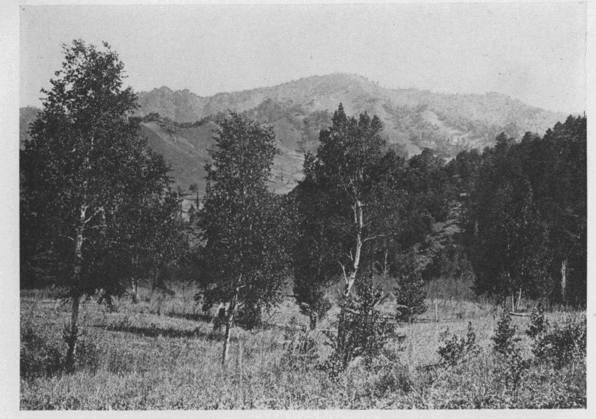
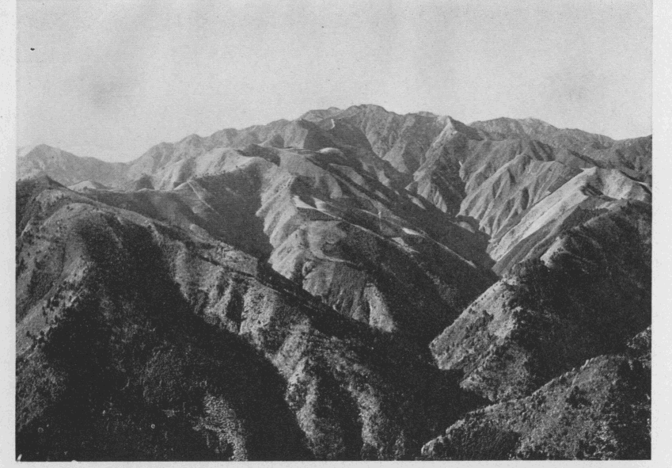
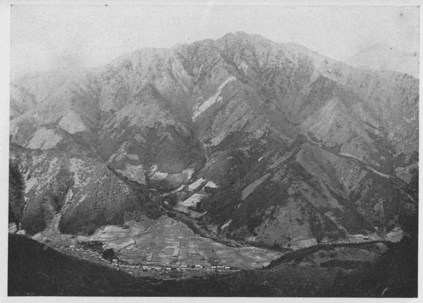
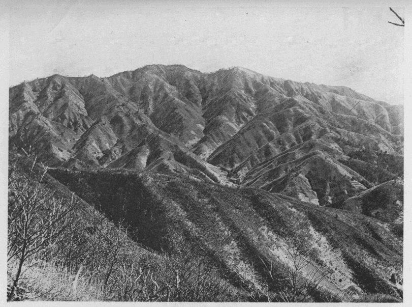

私が始めて秩父の山々から受けた最も強い印象は、
其色彩の美しいこと及び其連嶺の長大なることであった。水蒸気の代りに絹針でも包んだような上州名物の涸風が、木の葉色づく十月の
半過ぎから雪の白い越後界の山脈を超えて、収穫に忙しい人々の肌を刺すように吹きすさむ日が続くと、冬枯の色は早くも樹々の梢に上って、日蔭には霜柱が白く、
咽ぶような幽韻な音を間遠に送る大和スズの声を名残として、大地は漸く静寂の
眠に就こうとする。
此頃からして秩父の群山は其
翠緑の衣を脱ぎ捨てて、最も目覚ましい絢爛の
粧を凝らすのである。「秩父山が見えて来た」里人の口から出る此の無造作の一言の中に、どれだけの深い意味が含まれているかは、
斯ういう人達の日常の言葉を注意して味わっている人には、容易に洞察することが出来ようと思う。
実に秩父の山々は、私の生れ故郷東上州から眺めては、初冬から一月下旬にかけて素晴らしく豊富な色彩を現わす。そして其色には深い深い神秘が包まれている。美しいと共に崇高である。
然しそれは北アルプスの雪の山が、山それ自身が高大である為の崇高ではない。或は杉並木の奥からほの見ゆる
丹塗りの御社の「神」を予想した為の崇高でもない。全く山の色の深さのみから生ずる崇高である。山に雪が深くなるに連れて此の豊富な色彩は次第に其量を減じて来る。二月から三月にかけて白雪山谷を埋めた頃が、最も色彩の乏しい時であるのは云う迄もない。
十月は麦蒔の畑打ちに忙しい。男も女も皆仕事に出る。
頬冠りの男の中に交って赤い
襷の女も一緒に礫を打っている。振り上げる鍬の刃先がキラリキラリと光る向うには、秩父の山々が美しく聳えている。昼に弁当とお茶を持って
其処に行くと、皆が
畔に腰を掛けて食事を始める。立てて置いた鍬の柄に赤蜻蛉が止って、その
尻っぽの先が高い山の
巓とすれすれになっている。何か羽虫を見付るとすういと飛んで行く、そしてスミスの飛行よりももっと巧妙に一つくるりと宙返りを打って
復たすういと戻って来る。秩父山は依然としてこの小さな活動の舞台に美しい背景を与えて、
夫が
日毎に繰り返される間に、山の色の深い秘密というようなものが、子供心の何処かの隅に朧げながらも印象の痕を残し止めて、何かの機会を捉えては急激に鮮明の度を増して行くらしい。
十二月に入ると薪取りや木の葉掻きが始まる。寒い赤城
颪に吹かれ冷い朝霜を踏んで凍えた体を、焚火に暖めてからゆっくり仕事に取懸る。私は家の男達に連れられて林に行くのが楽しみであった。人並に研ぎすました大鎌を腰にさして兎や
雉子を追い出しては遊んでいる。小松林の上や
楢林の木の間に濃い
鮮な秩父山の姿が浮き出したり織り込まれたりするのを見ると、大きな木の上に登って邪魔な枝を叩き切りなどして訳もなく喜んでいる。私の目と高い山とを
維ぐ糸の上を渡り鳥の群れが往ったり来たりする。時には一羽の鷹が
不図私の魂をのせて紫紺色の透明な肌を持った山の方へ矢のように飛んで行くことなどもあった。
昼餉の時には
茜さした
さるとりいばらの滑かな茎で箸を造る慣わしであるが、何処か山の色に似た懐しい色合を持っているのが気に入った。七つ下りになると人より先に帰って来る。此頃の晴れた日の夕暮に
途々望まれる秩父山の色ほど美しい色は、どの山にも見られない。鬼が棲んでいるという浅間山、天狗が出るという赤城山、
袈裟丸、奥白根、男体山、さては
岩菅から上越国境の山々、皆鮮かに望まれるが一として秩父山に似た色彩を持っている山は無かった。殊に日が落ちてから三十分間
許の間が最も美しい。入日の名残の光が山々からふっつり消えると、秩父山は輪廓のはっきりした透明な紫紺色の雲のようになる。そして奥の方からは後からも後からも異った色の雲が湧き出して、それが一つに溶け合って、深みのある美しい崇高な姿を、冴えた華やかな夕暮の空に
静に横たえている。
この眺めは門の前に立っていても二階に座っていても見られた。然し草鞋をはいて遠い林に行き、焚火で煮たお茶で昼飯をすまし、一日遊び暮して家に帰る途すがら眺めるのに比べて、どちらが感興が深く印象が強いかは云うに及ばないことである。
此時頃私の脳底に烙き付けられた秩父山の美しい色彩の印象は、年と共に鮮かさを加えて、其後冬休みに帰省する毎に鎌を腰にさして林の中を一日ほづき歩いては帰りに山を見るのが楽しみの一となった。其当時名も知らなかった山の大部分は既に踏破し、その山々に包まれた渓谷の秘密も少しは窺い得た今日となっても、そのかみ謎の山から受けた強い色彩の印象は少しも衰えないのみか、今
尚お昨の如く懐しさに変りはない。
夏になるとこれも上州名物の一つである大夕立が、七日も続いて迅雷豪雨を飛ばすのは珍らしくもない。特に私の地方では俗に「
御荷鉾の
三束雨」と唱えて、恐ろしく雨足の早い大夕立の起ることが年に四、五回はある。雲が起って雷鳴を聞いてから、刈り取った麦を三把束ねないうちに雨が落ちて来るというので、古くから斯う言いなされていた。この夕立が北に向わずして、まっしぐらに東の方へ驀進して行く光景を眺めていると秩父山脈の長大なることが今更のように強く印象されるのである。
霧の深い朝は午後に夕立の起ることが多い。其霧が西北の風に吹かれて、日光が洩れて来るようになると時として白い虹の立つことがある。そんな時には
屹度大夕立の起る前兆だといわれている。日が高くなるに連れて空は名残なく晴れ渡るが、積雲の塊は早くも山の端に
屯している。午後になると夫がそろそろ動き出す。遠雷の響に昼寝の夢から覚めて、門の前に立って四方を見渡すと、日光、赤城、榛名、御荷鉾の各方面に夕立が始まっている。中にも御荷鉾山のあたりのものは殊に
勢が激しいと見えて、銅色をした雲の峰がむくむく湧き上る後ろでは、電光が頻りに閃いて、遠雷の音が空気よりも大地を伝って響いて来る。さては来るなと思って見ている
中に、長大なる巻層雲の先駆は真綿を繰り出すようにどんどん東の方へ延びて行く。嵐を孕み
霹靂を載せた真黒な
撥墨の雲が
蓬勃として自ら止まるにも止まれないといった勢で、噴泉の如く下から湧き上っては横に崩れる。それが次第に白味を帯びて来ると、初めて電光の火柱が地上に向って頻りに突立つ。ドス黒い色をした低い雲が四方から
何時ともなく湧き出して其方へ駆けて行く。忽ち水晶簾を捲き下ろしたような雨脚が、此時まで頭の上で騒乱している雲の運動を
余所に湛然と控えていた秩父山の濃藍色の肌に白く立ったと見る間に、谷を埋め峰を越えて、連嶺の半にさし懸った頃には、後の方は早くも碧空を
顕わして、奇峭な両神山の姿がちぎれちぎれの断雲の間から望まれる様になる。この大夕立が秩父山を通り過ぎて、東の地平線上に銀の
縁りを着けたような一塊の雲となって、東京の空あたりに余勢を逞しうするのは、三時間も経った後である。私は夕立が秩父山を通り過ぎるのを見る毎に、其山の長大なることを嘆賞せずにはいられなかった。
東上州は東京湾の中等潮位から
僅に五十米の高さを有するに過ぎない平野ではあるが、試に路傍に立って南方武蔵野の平原に眼を放つと、低い地平線上には
遥として展望を遮ぎる何物もない。其視界の尽くる所に軽い一抹の雲烟のようなものがふわりと浮んでいる。此の夢のような夫とも分らない薄い藍色の山は、恐らく秩父
入間の郡境に
亘る飯盛峠の附近であろうと思う。遠い夢の国から浮き上った微妙な線は淡い幻の国に引き返して、少しの間
現に顕れて来ないが、やがて水面に浮ぶ大魚の背の如くに再びゆらりと姿を顕わすと、根に籠る若草の力が茎となり葉となって伸びて行くように、
若しくは
又苔の下に咽んでいた清水の滴りが岩間に走り出て、忽ち
潺湲の響を立てながら一道の迅流となって駆け下りて行くように、後から後からと次第に力が加わって大空の一点を指して或る高さまで達すると、
茲に始めて長短曲直各種の線が離合集散の妙を尽して、一連の大山脈即ち東は雲取山から西は
三宝山に至る長大なる連嶺を天半に聳立せしむるのである。そして
終には彼の両神山の奇峭を
掉尾に振い起して、この大山脈を竜頭蛇尾に終らしめない所に、自然の用意の周到なることが窺われる。秩父山は実に上州方面より望む
可く造られたものであって、其色彩の美、其連嶺の長大は、他の如何なる地点より眺めても、到底此方面に於けるが如き充分なる印象を享受することは不可能であろう。
私は早くから日夕其姿に接して、強く脳底に焼き付けられた此等の印象を
齎らして、秩父の山や谷に分け入ったのである。そして実地を蹈んで見て、此等の印象を裏切りされなかった許りでなく、長大に加うるに更に深奥という、遠く望んだだけでは得られなかった新らしい一つの印象を脳底に焼き付けたことを喜んでいる。
曾て「秩父の奥山」なる記事を書いた時、私は今日の秩父山が、渓流の
澄
と、森林の
蓊鬱と景趣の
幽邃とに於て、其権威の絶頂にあるものであると
曰うた。連脈の長大と深奥とは、自然の結果として此三者となりて現れ、此三者は
相俟って色彩の美を
煥発する要素であることは、別に多言するまでもない。
更に地質の上からいうと、秩父の奥山の主脈は大略
之を四つに分つことが出来よう。第一は西の小川山から
甲武信岳の附近に至る
金峰、奥仙丈山塊を含むもの。第二は甲武信岳附近から
雁坂峠に至る甲武信山塊、
破風、雁坂山を含むもの。第三は雁坂峠から
将監峠に至る
古礼山、唐松尾の連脈を含むもの。第四は将監峠以東白岩山附近に至る竜バミ、
大洞、雲取の諸山を含むものである。第一は全部花崗岩、第二は花崗岩と古生層と相半し、第三は山腹以下花崗岩（石英閃緑岩）にして其以上に古生層を戴けるもの、第四は全部古生層から成っている。此等を源頭とせる各渓谷の特長、相互の比較等、挙げ来れば面白い幾多の問題が存しているが、今一々之を論じている訳にゆかぬ。若し秩父山を旅行したいと思われる人達が、私が分けたように四つに区切りして、一つ
宛山や谷を探られたならば、必ず面白い結果が得られるに相違ないと信ずる。
二、三年このかた、新聞などにも折々秩父の紀行文が見られるようになった。そして見出しには必ず奥秩父なる文字を用いているが、其文を読むと、大抵
三峰あたりより奥へは行っていない。栃本や中津川迄蹈み込んだ人さえ甚だ稀であるようだ。尤も山登りが主眼でない
所為もあろうが、雁坂越え、十文字越え、或は中津川を遡って三国越えを試むるか、又は少くとも奥秩父と云うからには、三峰から雲取山さもなくば将監峠を経て、多摩川の上流に達する位の旅行をして貰いたいと思うのである。
然しこれは
只奥秩父を旅行せんとする人に対しての希望であるに
止っていることは言う迄もない。奥秩父の登山を目的とする人は、武甲山や三峰に登った位では、決して秩父の山を大観したとはいえない。是非とも西は小川山、金峰山から東は雲取、白岩の附近に至る間の、甲信武甲の国境山脈に聳立している山々に登られんことを希望する。都を離るること三十里に足らず、四、五日の手軽な旅行で、
可なり深い山の旅らしい感興を
齎し帰ることの出来る誂向きの所というては、先ず秩父を第一に推すことは、誰も異存の無い所であろうと思う。晩近登山の気風の勃興と共に、都の若い人達が奥秩父の山々に登られるようになったのは、大に意を強うするに足るものがある。南北アルプスの諸山を縦走する場合のような大袈裟な登山では、人夫の雇用其他の準備で多くの費用を要するが、秩父では殆んど人夫などの必要は無いというても好い位である。其上四月下旬から十二月迄の間なら、
何時何処へでも自由に登山することが出来る。そして山の高さから言えば、二千米から二千六百米に及んでいる。雪の多い時が望みなら、四月中旬以後五月上旬迄に甲武信、金峰の連脈に登れば、十町や二十町の間四、五尺の雪を蹈むのは普通である。唐松や白樺の若葉が見たいと思えば、五月の梓山、
川端下の戦場ヶ原がよい。紅葉は十月の梓山、川端下、
黒平、金山。
石楠花は殊に秩父奥山の名物である。瀑布は
入川谷の支流荒川の権太瀑、真ノ沢に
木賊瀑が懸っている。花崗岩の侵蝕谷には笛吹川の上流東沢、西沢の奇峡がある。花崗岩と古生層との侵蝕谷には入川谷、滝川谷がある。入川谷の幽邃と険怪、東沢、西沢の壮大と
瑰美、共に秩父の沢の中では第一に位するものである。どう考えても奥秩父の山や谷は、都の山岳宗徒にとりては、殆ど天与とも言う可き巡礼の聖壇であり、活躍の舞台である。之に詣で之に上ることをせずして、空しく遠方から眺めているだけでは誠に勿体ない。私の此文が若し
幸にして何等かの参考ともなれば本懐の至りである。
〔註〕茲に附記して置きたいことは、私等は初めて甲武信岳に登る時案内者を同伴しただけで、其他は単独若しくは二、三人で案内も人夫も雇わずに遂行して、幸に無事に済んでいるが、最近秩父の山や谷を探る度数が重なるに連れて、益其奥深いのに驚嘆している。好晴の日は言わずもがな、若し運悪く途中で霧か雲にでも捲かれると、思いの外の大困難に遭遇しないとも限らない。若し案内無しで登られるような場合には、天候は勿論、其辺の用意は尤も肝要である。

●梓山の戦場ヶ原と蟻ヶ峠
明治四十五年七月二十三日より二十七日まで。
飯田町――塩山――川浦――雁坂山――破風山――木賊山（雲切山）――甲武信岳――梓山――三国峠――中津川――両神山――小鹿野。
明治四十二年の十月、
南日君と二人で秩父の栃本から十文字峠を
踰え、梓山に下って
其処から初めて甲武信岳へ登った時のことである、金峰山と
国師岳との間は縦走されているにも
拘らず、国師岳と甲武信岳との間は誰もまだ縦走を試みた人は無いようである。ことによると人跡未到の地かも知れぬ、よし
夫なら私達が真先に蹈み込んでやろうという
考が心の中に閃めいた。
然し様子が知れないので
愚図愚図している間に三年は過ぎて仕舞った。
折角手を付け始めた秩父奥山の跋渉を他人に先鞭を着けられてしまうのも残念であるというので、今年南日君が上高地へ行くというのを
幸に、連れ立って先ず雁坂峠から甲武信岳まで縦走し、天候其他に差支がなかったならば、更に金峰山まで縦走しようと相談が
決って、七月二十二日夜九時飯田町発の汽車で東京を出懸けた。
今年の三月下旬に南日君は中村君と同道して、丹波山村から大菩薩岳に登り、尾根伝いに柳沢峠へ出ようとして、誤って
大黒茂谷に迷い込み、一夜を雪の洞窟内に過したが、防寒具と食糧との用意を欠いた為に、危い目に遭った苦い経験から、用心深いこと夥しい。が、お蔭で荷が重くなったのには
大に閉口した。
二十三日。午前四時過ぎに塩山に着いて、荷物を直すとすぐ出懸る。町の真中頃で柳沢峠への道と別れ、向岳寺の前を通って井尻村にさし懸った頃には、停車場を離れる時からポツポツ落ちていた雨が大分降り出して来た。名高い恵林寺は知らずに通り過ぎ、藤木村最終の一軒家を後に見なすと道は清冷な
流を湛えた用水堀に沿うて、笛吹川を左下に見ながら、
沢胡桃、栗などが並木のように列んでいる間を通って行く。雨は小降りとなったが雲が低く垂れて、近い前山の頂きさえ其処とも判らない。荷が重いのでよく休む。南日君の背嚢は蛙の腹のように膨れ返って、何かはみ出しているものさえある。聞いて見ると上高地で勉強する為に舶来の本を五、六冊詰めて来たのだそうだ。今迄一緒に旅行して遂に汗らしい汗を流したことのない南日君も、今日は洋服の上着を透して滲み出している。
此時初めて南日君も汗をかく人だということを知った。
下萩原で橋を渡って笛吹川の右岸に移った。川の景色は悪くない。三、四町歩いて道端の飲食店で朝飯を炊かして食事を済す。一時間休んで九時に出発した。雨は
歇んだが道は
濘るので足が重い。十一時天科に着いて水を入れる用意に一升入れの石油缶を買ったなどは、奇想天外から来たと自慢する価値はあろう。広瀬に行く途中雲が切れて雁坂山と破風山を望むことが出来た。長く伸びた山の鼻を廻って少し登ると、原のような平に如何にも
見窄らしい人家が十五、六軒あるのに気が付く。峠下の村であるから秩父の栃本位の処かと想像して、其処で昼食にする積りのあてはすっかり外れたので、振り返りもせずサッサと通り過ぎる。然し今は峠ノ沢の製板業が
盛になったので宿屋なども出来て、
聊か面目を一新した形である。すべる赤土道を登って午後一時赤志に着く。此の赤土道の通っている山の鼻が赤ッパ尾根というのであろう。二軒しかない上手の方の家に寄り込んで米を出して昼食を炊いて貰った。笛吹川は此下で分れて西の方へ折れ曲っている。ドス黒い雲が重く垂れている渓の入口に
素張らしい岩山が右から突き出しているのが目を惹く。爺さんに聞くと
鶏冠山だと教えて
呉れる。恐ろしい山だと思った。
二時二十分に此処を立って、少し行くと道は急に細くなり、登りも
稍や激しくなる。唐松尾根というのは此辺であろう。針葉樹や闊葉樹の入り交った林の中を辿るので、漸く山の旅らしい感じが起る。
燕オモトが多い。同じような道を二時間
許り登ると、少しの間渓流に下って河身を辿るようになる。立派な小屋が河の中の岩の上に建ててあった。御用品中継所の看板がある所から推して、御料局で建てたものだろうと思う。
渓を横切ってから草原を七、八町も登ると左から谷川が落ちて来る。
栂の大木や
槭などが茂り合って、稍や深山の趣がある。谷を渡って
又登りに懸ったが、考えると恐らくこれから上には水があるまいとの懸念から、引き返して川のほとりの廃屋の跡へ野宿する仕度の最中に下から二人上って来た。そして峠のすぐ下に一杯水という冷たい泉のあることや、小屋の骨組のあることを話して、もう幾町も離れていないから其処へ行って泊る方がよかろうと付け加える。早速其言葉に従って一緒に登り初める。疲れている上に急なので骨の折れること甚しい。南日君はとうとう一緒に登って行ったが、私は後に残されて仕舞った。少し登ると木立が途切れて左手に美しい青草の斜面が現れる。落葉松の大木が三々五々、
矗々天を突いて雲の中にぽうっと滲み込んでいる。夢のような景色だ。好いなと目が云う。ほんとに好いなと直ぐ足が賛成して立ち停る。五町程登ると右に折れて道が少し平になる。其処に針葉樹の一叢茂った中から清冷な水が湧き出している。二十間ばかり東に離れて山腹を切り取った一坪位の平に
均された所に、栂の枝で造った
至て無造作な猟師の
鳥屋のようなものが立っていた。一緒に来た二人は今から栃本迄下るのだというて、私達が夕食の仕度をしている間に清水の傍で弁当をつかって、御大事にといいながら別れて行く。もう六時を過ぎている。あの人達は四里の峠路を
而も夜になるのを承知で、隣村へでも行くように気が軽いのは羨しい、などと話しながら温い食事を始める。今度は頭の上でガヤガヤ騒ぐ声がして、峠の方から七、八人下りて来た。私達を見て怪しむように足を留める。川浦の人達で山の境界の争いからごたごたが起って、栃本へ行って話をしたが一向
埒が明かない、といったようなことを話して、一服してぞろぞろ下りて仕舞った跡は急に淋しさが増したように感じた。
油紙を一枚屋根に掛けて雨の降った時の用意に備え、
茣蓙を敷いて其上に寝転びながら、銘銘の持って行った蝙蝠傘を拡げて入口を囲い、風の当らないようにして
眠に就いた。南日君は昼の疲れですぐ鼾をかいて
睡ってしまったが、私にはどうも旨く寝つかれない、枕元の叢の中でコトコト茶たて虫のような音を立てるのが耳障りで仕方がない。棒切れで無茶苦茶に引掻き廻してやるが、暫くすると
復たコトコトはじめる。此音は一晩中止まないで一方ならず私を苦しめた。
宵には淡い月影が前面の木立を洩れて雲間に姿を見せる。星の光が海底の真珠のように三つ四つ二つ
燦めいていたので、やれ安心と思う間もなく
密雲忽ち天を閉じて、幽霊のような白い霧が時々すうと小屋の中まで這入って来る。パラパラと雨が落ちては又止む。
斯うなれば火がないと妙に心細い。起きて焚火をする音に南日君も目を覚して、二言、三言話したかと思うと又ごろり横になって、大袈裟にいえば
鼾声小屋を
揺がさんばかりであった。
二十四日。四時頃から仕度にかかって六時に朝飯がすんだ。西から南の方の雲が切れて、国師岳や富士山の頂上などが碧空に現われる。此時一人の行者が下って来た。峠の向う側で蕎麦粉を舐めて一夜を明かしたのだという。水を飲んで人家までの里数を聞いた後、復よたよた下りて行った。昼飯の分も炊いて飯盒に入れたまま背嚢に押し込もうとしたが、到底余地がないので南日君が腰の周りに縛り付ける。私は水を入れた石油缶をぶら下げて、七時二十分に峠に向って草原を右に左に登り始めた。直径にすれば二町位なものであるが、斜面が急である為に五、六町は登らなければならない。峠の上で道が二に分れる。右すれば新道の方へ、左して少し上った後に右に山腹を
搦めば旧道の方へ行かれる。私達は左に山稜を辿って、雁坂山の頂上を指して急いだ。雲が又湧いて眺望は皆無である。昼も暗い針葉樹の林に這入ると、木の間に霧が鼠色の網を張って
犇々と捲き寄せて来る。
此儘何処かの谷底へでもさらわれて、体が溶けて水になるのではないかというような気がする。三尺許りの杭に査何号と書いて頭に釘を打った標木を唯一の頼りとして、切明けの跡を失わぬように登って行く。一の小高い所を越えて八時二十分雁坂の山頂に達した。櫓は切り倒されて三等三角点の標石だけが埋めてある。十分間程休んで破風方面の雲の晴れるを待って見たが、少し明るくなったと喜ぶ甲斐もなく、すぐ又暗くなるので磁石と切明けを力に思い切って西に下り始める。梭葉草が非常に多い。風揉めの為に立ち枯れた木が時々骸骨のように白くされて
途に倒れているのもあるが、下生えの若木が無いので甚しく邪魔にもならない。下り終って登りに懸ると切明けの跡が覚束ないものになって、灌木が茂り出す。秩父方面を搦みながら暫く横を辿った。然し山稜の最高所を
余所にして歩いては、他に紛れ込んでも気が付かずにいる恐れが多いので、密生した石楠を押分けて再び山稜の上に出た。何という大きな岩だろう。
嶄巌磊※［＃「石＋可」、U+7822、86-16］とはこんな光景を指していうのであろう。そして其岩が皆花崗岩であるのには更に驚かざるを得なかった。岩間には
岩鏡、
一葯草其外名も知らぬ紅や白や桃色の花が咲きこぼれ、特に一面に叢生している石楠の大木は、殆んど白に近いほど極めて薄い桃色のさした花を枝も
撓む許りにつけて、今や真盛りに咲き誇っている。快い香りが鼻から入って腸の奥まで沁み込む。岩頭に立って甲州側を
瞰下ろすと、足早に駆け下りて行く霧の絶間から大きな岩が幾つか
顕れたり消えたりして、
米栂などの灌木状の針葉樹が岩の肌にべっとりと緑をなすり付けているのが、霧の中で溶けたり固まったりしている。二人の神経はこの高山的な景象に刺激されて頻りに興奮するので、石楠の花の中に顔を埋めるようにして其香を味いなどした。
此処が或は破風山の頂上であるかも知れぬ。
兎に
角三角点の有無を確めて置く必要がある。そこで南日君は後戻りをして横に搦んだ山の頂上を見にいった。暫くして無いよと言いながら帰って来た。其処が東破風の頂上であろうと推測し得たので、安心して此処を出懸けた。
雁坂山の頂上から破風山までは一里位のものであろう。途々数えて来た国境の小標木は七十八本であった。約三十間に一本の割合位に立ててあるようだから、三十五、六町という見当に大した相違はあるまい。
岩から岩を伝わって、或時は美しい
米躑躅の花を蹈みしだいたり、或時は密生した石楠の枝に引き留められ、其花の香に酔わされたりなどして、険しい山稜を西に辿る。手に提げた水入れの石油缶が邪魔で仕方がない。
其癖今朝からまだ一滴も口に入れないのだ。寒い位涼しいので水など少しも欲しくない。忌々しいので岩の上をガランガラン引摺ったりなどしても、不思議に滾れもしなければ又壊れもしない。東破風に着いたのが十時四十分で、十分許り休んで十一時十分西破風の三等三角点に達した。小さな櫓が残っている。其
側にドッカと荷物を卸してゆっくり昼飯にする。展望がないので
却て気が落ち着いて好いなぞと負惜みを言っていたのは誰であったか忘れてしまった。
頂上は広くはない。東寄りに少し木立があるが西から南は開けている。脚の下の青苔の間から顕れている岩は、研きをかけたように白く滑かで、黒雲毋が散点しているのが誠に美しい。野営でもしたものか、秩父側に寄った木の繁みの下に、
燼さしの木が散らばっている。見る通りの岩山なので、植木屋が真柏を採りによく登るということを後に聞いた。しかし
最早採り尽されたそうである。此焚火の跡は察する所其人達の仕業ではあるまいか。
曾て『山岳』九年三号の雑録欄に、東京市中からは此山は雁坂山に隠れて見えないというように書いた。其後極めて好晴の日に凌雲閣へ登って、此山が雁坂山の左木賊山の右下に姿を顕わしていることを発見した。尤も東破風だけで西破風は
終に
見分が付かなかったが、雲取山から写した辻本君の写真から推して、西破風も見えるに相違ないという断定だけは付けられる。
正十二時に頂上を辞して西に向って下り始める。一歩蹈み出すと足は釘付けにされて、驚異に

った眼のみが空しく其辺をさ迷うに過ぎない。巨大な岩塊の堆積した同じ様な斜面は、灌木状の針葉樹を同じ様に
粧うて、傾斜が同じ様に急である。
蓬勃たる霧の海は汐のさし引きするように音もなく押し寄せては音もなく退いている。強くはないが冷い西北の風が山頂より吹き下ろして、霧が薄らぐと二、三百米もあろうと思われる緑の斜面が遥かの下まで続いて、末は何処にどういう風に連なっているか其処までは目が届かない。右の方に尾根らしいものがちょいちょい姿を見せる。しかし
是は松葉沢の源頭に当るものらしい。二人で左右に別れて切明けの跡を探した。盆栽でよく見かける恰好のいい黒槍の一尺ほどのものが、
棕梠縄で枝を
撓められたまま岩間に生えている。植木屋の仕業に相違あるまい。やがて掘り取られる運命を持っているのかと思うと可哀想になって人には気の毒であるが、目に付いたものは
悉く解放してやった。辛くも切明けの杭を探し出して、其方へ下りて行くと次第に人の通った跡らしい形跡が目に入る。三町程も下った頃茂りに茂った米栂の上を渡る拍子に、足を蹈み外して一、二間横に抛り出された。手に当る枝を力に起き上ると、生々しい松脂の香がぷーんと鼻を襲うて来る。怪んでよく見ると紛う方なき
偃松の枝である。私は小躍りして喜んだ。秩父の山でこの懐しい植物に遭おうとは夢にも思っていなかったのである。南日君の来るのを待って、あった、あったと
落物を探し出しでもしたように見せびらかす。南日君も喜んだ。珍らしくもない発見であるが、兎に角嬉しかった。東京に帰って話をすると
屹度口の悪るい連中のことだから、五葉の松を見て来たのだろうなどと冷かすに決っている。其時に痛いほど鼻先に突き付けてやろうというので、枝先を折ってカバンに入れた。しかし案じた程もなく真面目に話を聞かれたので、松葉攻めの計略は画餅に帰してしまった。何という運の好い人達であろう。
下り着いた鞍部は入川谷の木賊沢と
子酉川のヌク沢との分水点に当っている。
唐檜や
白檜の密生した梭葉草の多い小山を二つ踰えて、三つ目の山に懸った。この登りが飽きる程長い。切明けはあるが若木が足に絡まって大に困難した。午後一時半に岩が露出して甲州方面に赭い砂の滝を
頽れ落している処に着いて一休みする。砂の上には生新らしい熊や
羚羊の足跡が縦横に印している。余り好い気持ではない。風が汗ばんだ体にひやりと冷いので、十分許り休んで出懸けた。又針葉樹の密生した薄暗い林の中を切明けを辿って真直ぐに登る。二時、一の峰頭に着いた。正面に恐ろしく幅の広い切明けがある。測量当時に切り倒したものらしい針葉樹の大木が縦横に狼藉して、足の入れようがない。左の方にも
亦切明けがあって、狭いが楽々と通れる。此処は木賊山の東の肩に当る隆起で、左の切明けは子酉川の東沢に合流する鶏冠谷に沿うて登る道であることは後に知ったが、其当時は
孰れを取たものか随分迷わされたものである。
これだけ大仕掛に木を切り倒した点から推すと、近くに三角点があるに相違ないから、其処へ登るのが安心であると相談を決めて、広い切明けの方へ足を運ぶ。三尺程の高さに入り乱れて倒れた木の間を通行する面倒臭さは、一度経験した人でなければ想像にも及ばない。木の上を渡ると枝が邪魔になる。下を潜れば荷物が
支える。
僅の距離を登るのに一時間を費した。果して測量の櫓が現れて来る。頻りに

いている南日君を待ち合せて、三時に櫓の下で休みながら昼飯の残りとビスケットを平げた。当時は此山の名を知らなかったので、多分四十二年の十月甲武信岳に登った時、其処から東南に眺めたあの山であろうと想像的断定を下し得たに過ない。
三時十分、西北の斜面に沿うて下り始める。少し行くと左にガレがあって、其縁によく蹈まれた道らしいものが通じている。南日君は夫に
跟いて下ろうと主張したが、どうも少し方向がまずいので、南日君もとうとう我を折って右の林莽中に
幽かに残った切明けの跡らしいものを目当に下った。今考えると南日君の主張した道らしいものは、実際道であったかも知れない。一概に獣の路とはいわれないような事情がある。然し其時若し此道を下れば、あの恐ろしい釜沢に迷い込んで、今の半分程もあの附近の地勢を知らぬ二人は、よしや食糧が豊富であるにしても、第二の大黒茂谷の悲劇を演出したかも分らない。釜沢、釜沢、奥秩父に数多い沢の中でも、青葉に埋められた美しいこの沢は、同時に又最も恐ろしい沢の一である。
間もなく鞍部に下り着いて又登りにかかる。相変らず薄暗い林の中を杭を見付けては夫に導かれて行く。暫くして岩の露出した斜面に出た。林ばかり見慣れていた目には、多少なりとも高山相を帯びたこの登りが頗る気に入った。破風山を除いては今迄に此山が一番高山的であるなぞと話し合いながら、岩を登り切って石楠の茂っている狭い山稜の黒木の間を辿って行くと、忽ち前面が開けて、三尺ほどの高さに石を真四角に積み重ねてある
山巓に達した。四時である。どうも見たような処なのでよく考えると三年前に登った甲武信岳の頂上であるらしい。何だ甲武信じゃないかと大笑いをしたものの、あの時は秋の末で今は夏の盛りである。山谷の模様が一変している上に雲で遠見がきかない。近いと思った三宝山が雲の為に遠く見えたり、真直ぐであると思った尾根が著しく曲っていたりするので、疑って見れば甲武信らしくないようでもある。さあ心配になって来た。其処らをほつき歩いて特長のありそうな木や岩を仔細に吟味して、古い記憶を呼び覚そうとするが駄目だ。然しこの四角に積み重ねた石の壇が何よりの証拠である。他に斯様のものがあろうとは想われない。甲武信に相違あるまいということになった。
其中に北の方の雲が一度綺麗に剥げて、三宝山が全容を曝露すると南に面して屹立した巨岩の塊が目に入ったので、心が漸く落ち着いて来た。
此処から更に国師金峰と縦走する予定であったが、天候も思わしくないし、切明けの有無すら探ってない未知の地に蹈み入るの危険を
慮って、今回は雁坂、甲武信間の縦走を仕遂げたので満足することとし、梓山に下山することに決めて、
碌々飲みもせずに提げて来た石油缶の水を
尽く彼の積み上げた石に
灑いで甲武信岳の霊に手向け、四時頂上を辞して下山の途に就いた。
此道は既に南日君に記載されているから、私達は七時に十文字峠の追分に達し、八時に梓山の白木屋に草鞋を脱いだことを書いて置けば充分であろう。いや一つ忘れていた、あの途々眺めて来た美しい石楠の花は是非紹介して置かなければなるまい。
私は石楠といえば、黄花石楠、姫石楠の外は、五月淡紅色の花を開く普通の石楠を知っていただけである。然し破風山の頂上や甲武信岳の中腹以下に生えているものは、七月下旬が花盛りで、色は黄味を帯びたような白に心もち紅味がさしているかと思われる位である。淡紅色の花が褪せかかった時に少し黄味を加えたものと思えば大抵想像がつく。幹も葉も新らしいものは黄の勝った緑である。八町ヶ原から甲武信岳に向って一里程も行く間は、針葉樹主に栂の大木で、其下に目立って美しく感じられる花は、此石楠と
車百合である。私は余りの美しさに堪らなくなって、殊に見事な枝を二、三本折り取って担いで来た。段々疲れるに従って一本棄て二本棄て、梓山まで持ち込んだのは、僅に一本の小さな枝に過ぎなかった。
明日は別れだというので其夜は酒を汲みながら、安十郎や測量当時測量部の人夫となっていたという男を呼んで貰って、いろいろ山や沢の話を聞いた。安十郎に
拠れば甲武信岳の東南の山は雲切山と呼ばれ、鶏冠山は其山から南に派出されていること、十文字峠から出る沢は股ノ沢、三宝山から出る沢は真の沢、甲武信と雲切とから出る沢は木賊沢と呼ばれ、東に流れて秩父の荒川となること、真ノ沢と股ノ沢との間の尾根をナカミネ尾根と称すること、甲武信から国師、金峰、小川山に至る迄国境の切明けあることなどが判然した。もう一人の男は甲武信の西の山をミズシということや、甲武信附近の山を総称して三方山と呼んでいたことなどを教えて呉れた。
尚お安十郎は奥仙丈岳の絶巓は甲州に属していることを話したが、当時朝日岳を奥仙丈と信じていたので、余り気にとめて聞かなかったのは残念であった。
二十五日。午前七時半白木屋の前で南日君と左右に別れた。南日君は八ヶ岳に登って上高地に行き、私は中津川から両神山に登って帰京しようというのである。別れる際に南日君から
呉呉も血気の勇に
逸って冒険してはいけないと
誡められたので、すっかり子供に返って何だか悲しいような気がした。村はずれで十文字峠への道と分れ、左を取って三国峠に向う。白樺の木立に沿うたり稲田の
畔りを歩いたりして、十五、六町行くと河原に出て千曲川を渡った。
河原撫子、
女郎花、
鵯花、何やら
升麻、車百合などの花が露重たげに
頸垂れている。左手の草の斜面は高天原で、昔、
盤古の神と
建御名方神と戦場ヶ原で戦った時、諏訪明神の軍が
屯していた所だと伝えられている。細い渓流について四、五度夫を横切りながら登って行くと草原に出て、間もなく大きな岩が現われる。出がけに白木屋の主人に書いて貰った略図の通り、此岩を左に見て右下に谷川の音を聞きながら少し登ると、緩い傾斜の原の中を道が通じている。右の谷間の平地に鮮黄色の花が一面に咲いている。
信濃金梅のようであったが、側まで行って確める程の勇気はなかった。道は急に爪先上りとなって、
椈や
楢の大木が茂った中を
九十九折に上っている。楽な登りで木立にかかってから十町許りではや頂上に着いて仕舞った。村では好いお天気であったが、此処まで来ると東の強風が頻りに雲を送って、すっかり眺望を遮ぎる。真後ろの小川山だけが黒木を鎧うた尨大な山容を紺碧の空に悠然と横たえているのが、
振返える
毎に目を楽しませたが、夫も押し寄せる雲の波を幾度か切り抜けた後、終に姿を没してしまった。
当時私は此処を三国山とは知らずにいた。名は三国峠であるが、山は西の方半里許に聳立している千九百七十八米の蟻ヶ峠をそれと信じていたので、其頂上を窮めないのも残念であるから、切明けを辿って暫く山稜を西に伝わった。二つ許り峰頭を越えて三つ目の登りにかかった時、パラパラ雨が落ちて来た。
之を登り切れば頂であろうと信じてはいたものの、雲が深いので少し心細くなった所へ、今朝の南日君の言葉が胸に浮んで来た。それで「やめよう」と独言して峠に引返した時は十時である。往復一時間を損した訳だ。
峠の頂上から山の北側を辿って二、三町下り気味に東へ行くと道が二つに分れる。左は山道で主に下駄を運び出すのだそうだ。三里半も行くと上州の人家のある所へ出られるそうだが、一里許行くと殆んど道の形はなくなると白木屋の主人が話した。右に入って尾根の南側を稍や急に下ると又一つの尾根に出る。栂に交って唐檜、椈、白樺なども少しはあるが、十文字峠の
幽邃なるには及ばざること遠しの感がある。
馬酔木の大木が多いのには驚嘆した。登降の少ない極めて緩傾斜の尾根の上を二十町も下ると尾根の分岐点に出た。道は左の方に通じている。五、六町と思うほど下った所に初めて岩の露出しているのを見た。石の崩れなども二ヶ所ほどあって、道の形は次第に怪しくなるが、他に紛れ込むような恐れは無い。又三町も下ったろう。すると突然雲の領を脱して、前面に中津川の谷が見渡された。右には十文字峠の連嶺が雲の厚衾をすっぽりと被って、重苦しい暗緑に包まれた肌からは、霧のような雲がもくもくと湧いては上の方へ拡がって行く。水音が下から
幽かに聞えて来る。もう河も遠くはないなと思ったので、岩崩れのした側崖を横切ると荷を卸してゆっくり一休みした。
五、六町行くと道は急に下りとなって、而も尾根の鼻を真竪に下るので膝がガクガクして閉口した。約二十町も下ったろうと思う頃、右と左から沢が流れて来て落ち合っている所へ道も落ち合って爪の字になっている。左の沢は小さいが奔湍をなして、青葉の奥から白い布をさらしたようだ。右は即ち中津川の本流で、少し上手に七尺許の瀑が奔下している。下に大きな瀑壺がある。左手の崖に登って
瞰下ろすと、青い淵の中には岩魚が幾十となく群をなして、チラリチラリと白い腹をかえしている。小なるは五、六寸、大なるは尺余もある。惜しいものだと思った。時は十二時に近い。
此処から一里半許りの間、道は主に河原伝いである。河原は割合に広く、両岸に木立が少ないので、山奥の沢という感じに乏しい。栃本の入川谷なぞとはとても比較にならない。岩魚釣りの架けた丸木橋が要所要所にあったので足を
濡すにも及ばなかったが、
徒渉するにしても膝より上を越す気遣いのない所許りだ。中津川の奇景は上流よりも寧ろ中津川村の下流、
中双里附近から塩沢村に至る二里の間にあるといわれているが、『新篇武蔵風土記稿』に書かれたような絶勝の地でないことは
略ぼ想像が出来る。
昼食は飯を炊くのが面倒だから、持合せの麦粉を頬張って水を飲んで済した。両岸に時々絶壁が現われて来たので、もう岸に登っても好い頃と注意しながら河原を辿って行く。果して左岸に道があった。
斯うなれば心配はないのでぶらぶら遊びながら行く。竹藪が現れる、畑が出て来る。二十町も来た頃には中津川村の人家の前に出てしまった。三時少し前である。梓山から五里と称せられているが、半里位懸値があるらしい。
十五、六戸の人家が些かの平地に寂しく散らばっている所は、何処の山村も同じであるが、此処は何となく潤いのない、丁度雁坂峠の下の広瀬といったような村で、私が勝手に想像していた美しい山村の面影は、何処を探しても見られなかった。然し私は自然の賜物が初めから此山村の人達にのみ薄かったとはどうしても思われぬ。彼等の祖先が
何時の世にか争闘と迫害との絶えざる平原を後にして、此山奥に最後の隠家を見出した時、其処には生存競争場裡の敗者に向って、平和と安楽とを与うるに充分なる自然の同情があったに相違ない。不肖なる彼等の子孫は此同情に裏切りして空しく逸楽に耽った。彼等が桃源の夢から覚めた頃には、自然が既に彼等を見棄てた時であった。鳥が舞い鹿が遊んでいた鬱蒼たる森林は、見る影もない
平蕪と化してしまった。驚いた彼等は肉を
炙って脂を絞るように、手近の山に火を放って地膚から滲み出した貴い脂を
稗や
粟に変えて、荒んだ淋しい生活を送らなければならなくなった。斯くて山は禿げ地は痩せて、人は
益々自然から遠ざかって行く。私が中津川の山村から受けた最初の感じは余り快いものではなかった。
路傍の家に寄り込んで両神山へ登る路の様子を聞く。よぼよぼした爺さんが出て何か口の中でもぐもぐ言うていたが
薩張分らない。此奥の小神流川の上流に金鉱が開けてから、若い者は皆其処へ稼ぎに出て村には女子供や老人の外は残っていないらしい。
幸嶋とかいう家は此処の草分で十五人や二十人泊れるとは聞いていたが、私は嫌気がさして来た時なので、中双里から山越しに
白井差へ出て其処から両神山に登ることに決め、振り棄てるように此村を離れた。山百合が非常に多い。中には一茎にして三十余花を着けているものもあった。後で聞くと栽培しているのだそうだ。小神流川を渡って山の鼻に懸ると、道が二つに分れて、「左両神村、右落合。幸嶋」と書いた標木が立っている。左の方の焼畑の中に小屋が一軒あって、蕎麦を蒔いていた男が手を止めて私を見送った。道が急に下って川を渡ると又登りになる。このあたりの景色はそう捨てたものではない。河に下りては山の鼻に登って、二、三度同じような事を繰り返すと、道は河の中に通じた
儘両岸をいくら物色しても更に見当らない。中津川から標木のあった山の鼻まで十五町、其処から二十町は来たろう。河の中を一町も下って見たが、両岸は四、五丈の絶壁で、水の深さも股まである。これが急流ならば危険であるが流は緩かである。再び引き返して右岸の道を登って行くと、これは切畑への路であった。時は五時に間もないので思い切って
先き見た小屋に泊り、明日大峠を越えて白井差に行こうと思案して、元の路を引き返して小屋に着いたのは六時少し過ぎであった。河の中を今一町も下ると路に出るのだったと主人が話した。「百両もかけりゃ山へ路がつけられるのだが、村が貧乏だから如何もならねえ」。全く其通りかも知れぬ。
主人の名は山中房吉、二、三年はまだ此処で畑を作っていると話した。村では馬鈴薯が常食だそうで、今夜も煮たもの、焼いたもの、胡麻あえ、串にさして焼いて味噌をつけたもの、という風にくさぐさ御馳走になった。串刺しの味噌焼だけは馬鈴薯嫌いの私にも旨く食べられた。逆巻ノ瀑も
序に探りたいと思って其話をすると、瀑はすぐ近くにあるが小さなもので、一昨日金山の工夫が来て爆裂弾を瀑壺に抛り込んで、魚を皆捕って行ったという。空模様が少しよくなって夕焼がした。夜になると夜鷹が近くで喧しい程鳴き立てる。
時鳥と同じ鳴声であるが、調子が高くって鋭い。今迄私が時鳥だと思って聞いていた中には、大分此鳥の声が交っていたことが想い出される。作物を荒す悪い鳥で、傍へ来たら打って呉れると主人が旧式の鉄砲を取り上げてひねくり廻す。明日の山案内をして貰うことを頼んで、
蓆の上に横になった。
二十六日。西の空は晴れているが東は一面に曇っている。小屋を立ったのは七時だ。主人は鉄砲を担いで先に立つ。余り
扮ちが仰々しいので可笑しくなった。これで頂上まで僅に一里半しかない山に登るのだから誠に呆気ない。焦茶色の耳の立った小さな犬が二
疋、後から
蹤いて来る。畑を横切って細い道を山の鼻にかかると、いつか向う側に踰えて脚の下に小渓が瞰下ろされた。
車前草などの繁った日当りのよさそうな平に出ると、斯ういう所には
蝮蛇が甲良を干しているものだといいながら、犬を
嗾けたり杖で草を叩いたりする。私はまた可笑しさを堪えなければならなかった。五、六町も来たろうと思う頃左から来る渓を渡って少し登ると亦渓に出た。此辺は蔓草が繁っているので、夫を切り払いながら進むのは
可なり厄介であった。右側に白井差へ踰える大峠の路が落葉に埋れて幽かに見分けられる。私達は沢について何処までも登るのである。
肥後田（ヒゴノタワの略称）という所で、元は切畑があったそうだが、今では雑木が可なり大きく育っている。十町も登ったろう、渓に岩が多くなった。或所では水が一枚の石灰岩の渓底を深く
抉って一町近く続いていた。幅は僅に一間位であるが深さは二、三丈から四、五丈もある。名は石船沢。此処へ落ちると出られないと案内者が話した。全く出られそうもない。『武蔵風土記稿』にも両神山の名所の中に石船沢の名が載っている。
水の無くなった渓は浅くなり広く開いて幾つかに分れ始める。椈の大木が繁った枝を指し交わしている行手の方が少し明るくなって来た。朽葉の化けた土の香の清い山腹をひた登りに登って、尾根の上に着いたのは九時であった。この案内者は足も達者という方ではないらしく、兎角遅れ勝ちなので、割合に時間がかかったようだ。
私達の登った尾根は肥後田尾根といわれているそうだ。万場図幅の両神山から南へ延びた尾根がそれであって、私達は白井差へ越える大峠の路と両神山との間に聳えている千五百米の圏を有する峰の直ぐ北のたるみへ上り着いたのである。小屋から一里、両神山頂まで半里だという、眺望はないが木が茂っているのは嬉しかった。両神山も此辺の高さになると一帯の大森林で、
流石に秩父の山たる資格を備えている。
小笹を分けて傾斜の緩い尾根を北に五、六町も登ると、岩が現れて間もなく頂上に達した。左へ尾根伝いに行けば狩倉と称する壁立の岩峰に達せられるという。谷を隔てて西に見ゆる赭色の懸崖は
所謂赤岩で百米近く屹立している。其下に路があって上州の野栗へ出られる。即ち赤岩峠である。うすのろい雲が今日ものろのろ其辺を
匐い廻っていた。行く手に大きな岩が出て来る。岳ノ岩というのだ。攀じ上って之を踰えると、今度は小屋場ノ沢ノ大岩というのが息も継がせず突立つ。其下を左に三十間許り下ると七、八人は泊れる洞窟があるそうだ。岩の名はこの泊り場所を指示する為のものらしい。同じような大岩を更に一つ越すと路が二つに岐れる。左の方を登って行くと峰頭が鋸の歯を刻んで、路は歯と歯の間を右に左に搦むのであるが、危険だと思うような所は一つもなかった。其実の如く名も鋸岳と呼ばれている。絶巓はつまりこの鋸の歯の一つが高く大きくなったものに過ぎない。二等三角点の標石と何かの石像が二つ許立っている。二坪たらずの広さだ。五、六間北に離れて一段低い岩の上に御岳神社が祭ってある。此処から山稜を尚おも北に伝って行くと
竜頭山に出て八町峠へ下れるそうであるが、筍のような峰頭を三つ四つ越さなければならないから、楽ではないそうである。
此山は標高僅に千七百二十三米の低い山ではあるが、秩父奥山の主脈を離れて独立高聳しているので割合に眺望は開けている。西北から東北にかけては上野州の平原を隔てて浅間山から日光火山群に至る幾十の
峰巒を指点し得る筈であるが、今日は雲が多いので何一つ見えない。
唯秩父奥山だけは三宝、甲武信から唐松尾、和名倉山まで、断続せる雲の間から望むことが出来た。南日君も今頃は八ヶ岳に登っている筈なので、遠く其方面に眼を放ったが、八ヶ岳は勿論北アルプスの大嶺は、
霙々たる雲海の下に沈んで、終に一度も
孱顔を顕わさないのは残念であった。
十時前に絶頂に着いて留まること三十分、昼寝をしていた案内者を呼び起して、下山の途に就いた。分岐点まで戻って東へ四町近く下ると、水のある所へ行く道だというのが左に分れている。三町も行けば其処へ達するそうだ。少し上りになって尾根をつたうこと一町、又下る一町ばかりの所に石仏が立ててある。尚も下ると小森村で建てた両神神社の祠の前に出た。其処から少し左に離れて
薄村で建てた祠がある。両祠とも各其村の方に向けて建てるのだそうだ。祭神は
伊弉諾、
伊弉冉尊。此事実から推して此山に八日見山、竜頭山等の異名はあるが、
畢竟両神山から転訛したものであることが分る。案内の房吉は絶巓の北の方に竜頭山なる峰があって、之をリュウカミ山と唱えることは、前に記した通りであるから、中津川方面では今は両神、竜頭を区別している者と見える。
薄村の祠の前を右に一町も下ると東覗きと称する懸崖の上に出る。十文字峠途上の白妙岩と
能く似ているがあれ程眺望はない。然し絶壁の高さは百米以上もあろう。先年親子連れの
岩蕈採りが此崖から墜ちて死んだが今に屍は見当らないそうだ。西覗きは案内者も位置を知らないので、二人で探して見たが遂に分らなかった。少し戻って右に下る路の側の木の根に腰を掛けて昼飯をすまし、此処で案内人を返した。
此山の頂上附近は、一面に霧藻の垂れ下った五葉松や、ひねっこびた栂が多い。房吉の話によると年の暮には東京から植木屋が来て、松の枝や梢を切り取って、荷造りして運び出すそうだ。「東京の人ってええ気なもんだ、根もない枝を鉢に植えてさ、それで買手があるちうからうまい商売が出来るなア」。植木屋に戯談でも聞かされたらしい。正月の生花に使うのだと話してやったら漸く納得した。
二つの石像を左に見て一町も下ると又石像が立っている。察するに登山の盛んであった頃には、一町毎に立ててあったものらしい。中には何町目なぞと記してあるものがあった。此処から四町ばかりの間が最も路の急な所で、岩壁の横を搦むことも一、二度あった。頂上附近は石灰岩らしかったが、この岩壁は硅岩ではないかと思った。
間もなく一の鞍部に達した。路が左右に分れる。右は白井差に下るものであろう。左に折れて岩壁に沿いながら、うねりうねって七、八町も下ると初めて少し水のある沢に出た。地図には不動滝と記してあるが、岩の上に不動の像がある許りで一向滝らしくもない。此辺までは大木が茂って下草は余り生えていなかったが、此処から頭の上が透いて
薊や
木苺が所嫌わず生えているので、手足がチクチク刺される。四、五町下ると石像の側に虚空蔵童子と書いた碑があって二十八町目と記してあった。もう二十八町下れば麓へ出られるのだ、急げ急げと独言して、薊、車前草、木苺などの繁った道を、沢について右に左に五、六回水を
渉りながら、飛ぶように駆け下りた。余り調子に乗り過ぎて本道に出る二、三町手前で路を失ってしまったが、構わず林や草原の中を突き抜けて、十二時十分漸く広い道に出て一休みした。夫からゆるゆると五、六町も行った左手の高みに人家が見える。暫くして路は河近く下りて、向う岸へ登って行く路がある。後で聞くと其処が
日向大谷で、両神神社の祠官の家の在る村だとのことであった。地図には私の通った道は記入してないが、集人から河の右岸に沿うて広い道の在ることは
慥だ。恐らく之は近く造られた林道であろう。私はつまり地図に小さなガレの記入してある少し上手で河を左に渡らずに、其儘沢に沿うて下ったものらしい。
其日は更に六里歩いて吉田町に泊ったが、馬糞に蝶の群がる大道よりは、細い山路の方が
矢張り懐しかった。
大正元年八月二十六日より二十八日まで。
飯田町――塩山――柳沢峠――三ノ瀬――唐松尾――雁峠――古礼山――水晶山――雁坂峠――栃本。
ふと目が覚めた。山に
憧憬れながらもうつらうつらとして、遠く身辺を離れ得なかった魂は夜の寂寥を破って山々に反響する鋭い汽笛の音に、
吃驚してわれに
還ったものらしい。午後九時飯田町発名古屋行の列車に乗って塩山に向う途中である。外を覗くと行手の高い所に見覚えのある猿橋発電所の電灯が赤く光っている。心配であった空模様もどうやら持ち直したらしく、暗い層積雲の大きな塊は、例えば
伊太利の空にあこがるる北欧の詩人の如くに、南へ南へと動いて、見る見る大空の何処へか吸い込まれてしまった。山の端近く残っていた十三夜の月は、薄絹に包まれた
蘭灯のような光を投げて、平凡な桂川の谷を一幅の画に仕上げた。初秋風が晴れた空からそよそよと吹き下して来るらしい。連日の
旱に弱り切った草木が
懶い
眠から醒めて、来る
可き
凋落の悲しみの先駆である
此風の前に、快げにそよいで居るのが見える。
丁度此
歳の春三月、南日、中村の二君は丹波山村に行かれ、
其処から大洞山（飛竜山）に登られて、此方面に於ける暗黒なる奥秩父の山脈に一道の光明を与えられた。
就中竜バミ山、
牛王院山、唐松尾などという名を聞くのさえ初めてである二千米以上の山々が、一ノ瀬部落の奥に聳立していることを確めて帰られたことは、よしや両君は大黒茂谷に於て不慮に遭難された為に登山を果されなかったにしても、後の登山者の為に開路の手引となった績は、彼の七絶山を横断した西遊記の猪八戒にも劣らぬことと思う。天の配剤妙なる
哉で、両君と因縁浅からぬ私が最も其恩恵を蒙ろうとは、恐らく両君も思いかけぬことであったろう。私は今その唐松尾に登ろうとして、汽車が塩山に着くまで一人旅のつれづれなる
儘に余計な無駄口を叩くのである。
二十六日。午前四時十五分塩山着。改札口を出て先ず仰ぐ南方の天には、
羅馬の滅亡を予知して色を変じたといわれている
天狼星の閃光が、叢の奥から覗いている狼の目玉のように凄い。其上にはオリオン星座が
燦として輝いている。
鴿になって
夫から星になったといわれる七人娘のプレヤディース、金牛角上のアルデバラン、五星井に
聚って漢の高祖が天下を取って以来縁起の好い双子座のカストルとポラックスは勿論、ヘラクレスに吸われて驚いてもぎ放した拍子にジュノーの乳房から乳が迸り流れて出来たという天の河、星という星は針の頭程の小さなものまで
能く見える上天気なので、安心して青梅街道に向って歩き出す。
此道は萩原村の附近で南アルプスの殆んど全部を展望し得る壮観を除いては、誠に平凡で面白くもない道の一だ。桑畑で
草雲雀が小さな銀鈴を鳴らすような涼しい声を振り立てる。伊吹スズが時々テヤテヤテヤテヤリリーと浮かれ調子で混っ返している。柳沢峠の中途まで登って振り向くと、襟を重ね合せたような裾山の上に富士の頂が見えた。其富士が次第に迫り上って、峠の入口正面に前山を跨いで白い雲の上に全容を
顕わした時には、峠の頂上に着いていた。八時である。峠を少し北に下った所から破風山、雁坂山、古礼山、袴腰山、次で其東に黒木の繁った幾多の
峰巒が見えた。其中の一つが目指す唐松尾であるに相違ないがどれが夫であるかは知ろう筈がない。九時落合着。十時出発して高橋川に沿うて暫く遡ると高橋村に出た。手近い家に声を懸けて唐松尾への道を聞くと、黒暗天女のような顔をした四十
許の女が出て来て「わしは知らねえだよ、一ノ瀬へ行って聞いたらようがんしょう」といわれて、早々に逃げ出す。好い工合に向うからお爺さんが来たので一ノ瀬へ行く道を聞いて、犬切峠というのへかかった。風がないのと草いきれがひどいのとで暑いこと甚しい。其処を蝙蝠傘をさしてすたすた登って行く。『高野聖』の越中の薬売のことを思い出して可笑しくなった。病犬を切り殺したので、犬切峠と呼ぶようになったのだという。峠の頂から
先きに眺めた黒木の繁った山が正面に直って、いかめしい連嶂を押し立てている。中央の一段高い臼のような形をした峰が唐松尾であろうと思う。其東の尖峰の後から雲が湧き上っては鋭い鋒先に
劈かれている。随分高く見える。ザラザラに
※爛［＃「雨かんむり／誨のつくり」、U+9709、108-4］した白砂の上をすべりながら急な道を下り切ると一ノ瀬の人家の前に出た。十一時である。右に折れて二ノ瀬を過ぎ七、八町も行くと三ノ瀬だ、十一時四十分。
村は養蚕の真最中である。名は忘れたが蚕室の設備があるから泊ることも出来ようと教えられた家へ寄って、昼飯を炊いて貰いながら、山の話を聞いた。午後一時出発、家の後を通って一町も行くと道が左右に分れる。右は将監峠へ行く道だ。川に沿うて左を進み、草山の尾根を登って、水の多い渓川を更に遡ると沢の二分する所に来た。村から三十分の距離である。此二つの沢に挟まれた尾根が唐松尾の登路で、始めは路もさして悪くはなかったが、中頃から
篶竹が
蔓り出し、熊笹が繁り、
終には岩が顕われて、栂の林に抱き込まれた。登りが恐ろしく急になる。二十たび以上も立ち停って休みながら、三時漸く絶頂に達した。雲が湧き出して少しも眺望がない。測量の櫓は既に伐り倒されて、古生層の岩片狼藉たる中に花崗岩の標石が取り残されている。三時十五分西をさして山稜を下り始めた。石楠の多い岩蔭を三町も下ったと思う頃、左の谷から登って来る立派な道に出た、どうも様子が少し変なので再び頂上へ戻って仔細に吟味すると、国境の切明けの跡は三角点より三十間も離れた所にあって、今下ったのとは殆んど反対の方向に走っている。夫に跟いて岩の露出した狭い山稜を下って一つの鞍部に着いた。此辺に野宿する積りで両側の渓を探して水を
覓めたが、更に見当らない。見当ったのは羚羊の足跡と其糞位のものだ。霧は大粒になって今にも雨が落ちそうに重くたゆたっている。止むなく連嶺の縦走を思い切って三度頂上に引き上げた時には丁度五時で、空しく一時間半を費した訳である。六時三ノ瀬に着いて例の家に泊めて貰った。
二十七日。昨夜は十二時頃に雨が少し降った様子であったが、朝見ると好い
按配に晴れていた。七時に出発して一ノ瀬まで昨日の道を戻り、其処から右に折れて、二、三の人家を通り過ぎ、谷川に出て三、四度夫を渡りながら遡って行く。蕎麦畑、麦畑などが有る。八時谷間の少し開けた処へ出た。じめじめした草原で、チゴザサ、アブラススキ、ヤマイ、ミズガヤツリなどが一面に叢生している。此処で路が二つに岐れる。右は何処までも川に沿うて行くらしい。これは篶竹取りの道だと
兼て教えられていたので、左に登り初めると「右すす山道、左かんこうじぎょうしよ」（官行事業所ならん）と書いた札が立ててあった。若木の生い茂った尾根を半時間も登ったろう、小高い草山の頂上に立って来し方を顧みた。南正面に頗る立派な金字形をした大菩薩岳が雲の間から半身を現わしている外は、山らしい山は雲に掩われている。中にも奥仙丈方面に
屯している積雲の大塊は、銀白の頭をもくもくと碧空に
擡げて、絶えず
擾乱を捲き起している風情、
恰も百門の大砲を備えた一個軍団の兵が惨として
驕らざる勢を示している。あれが
若し押し寄せて来たら大変だという心配が起る。
此処から木立は全く尽きて短い笹の生えた鍋を伏せたような山が幾つか
駢んで、道は其間に縦横に通じている。右には昨日登った唐松尾の連脈が草原の斜面を見せて、雲の中から穏かな線を引き下ろしている。左には同じ草原の細い山稜が直ぐ黒木を
粧うて、縦に見る
所為か奥深く霧の裡にぼうっと溶け込んでいる。其間の鞍部へ志すらしい道を選んで辿って行く。九時国境の標木が立ててある処へ達して、左に
人丈けよりも高い篶竹の中を潜り下ること十分で、最低の鞍部に出た。このたるみは秩父では
雁峠と呼び、雁坂新道から岐れた
途が葡萄沢を登って来て此処に通じている。左の広河原沢（小佐野君に
拠る、地図の広川谷）へも下る道があるから、地図に記してある尾根の道を伝わずとも、谷を下って直接広瀬へ出られるのであろう。一ノ瀬では
燕ダルミ又は笠取峠と呼んでいる。峠を十四、五間広瀬方面に下ると教えられた如く草間を水が流れている。雁坂峠までは
最早水がないので、早昼飯を遣った。
九時半正面の草原を登り始め、十五分で頂上に着く、甲州側は岩壁が屹立しているので、
重に秩父側の栂の林の中を道が通っている。梭葉草を初めて見たのは此峰であった。一ノ瀬の
所謂燕山である。同じ位の高さの凸起を五つ六つ上下すると、山稜の向きが少し西に振れて、唐松のまばらに生えた、爪先上りの
茅原が続く。何処かの原へでも出たようで、山の上を歩いているという感じが起らない。
然し一歩秩父側に下ると栂の密林である。時に十時半。絶頂は西北の端に在って測量の櫓も未だ残っていた。真北に向って少し下ると右手に深い古礼沢が覗かれる。すぐ長い水晶山の登りが始まる。恐ろしく栂の茂った山で、好い切明けはあるが、まるで薄暗いトンネルの中を辿るようだ。十一時頂上に着く。国有林の境界の標木が小高い塚の上に建ててある。眺望は言うまでもなく皆無だ。こんな薄気味のわるい処に長居は無用とサッサと下った。此下りがまた馬鹿に長い。三十分も歩いて漸く木立を抜け、笹原を二、三町登ると、一と月前に通ってまだ記憶に新らしい雁坂峠の頂上に腰を落ち付けることが出来た。
奥仙丈山塊に陣取っていた雷雲の密集部隊は、左右に鵬翼を張って徐々と押し寄せて来る。甲武信岳のあたりは既に濃藍色の幾重の雲に包まれ、破風山も
亦まさに隠れんとして
勁い風でも起っているらしく、其あたりの雲が頻りに騒いでいる。
幸に北の方面は穏かであった。十二時峠を辞して新道を栃本に向って下り始める。少し行くと一小鞍部に達して尾根の南側に移った。脚の下は深い水晶谷である。岩壁の横を通る時には針金で釣った桟を渡ることも少なくなかった。尾根の上は岩の起伏が甚しいので、道がつけられないのであろう。石楠や横に拡がった栂が多い。一時半尾根の向きが北に変って、下りが急にえらくなる。二時頃「右雁坂甲州道、左雁峠一ノ瀬部落マデ三里半」と書いた標木のある処で一休みした。丁度
道普請の人夫が二人居たので、山や沢の名を聞いて見たが余り知っていなかった。此処から峠の上まで二里半であるという。二時半豆焼沢に着いて、お茶を煮ながら
昼餉の残りを平げる。道がまた登りになって尾根を
踰えると小さな沢を渡った。夫から滝川谷に沿うて十町も下ると旧道と合する。栃本に着いたのは四時五十分、
可なり急いでも五時間近く費している。此道は黒岩尾根を遠く東に迂廻しているので、旧道とは弓と弦ほどの相違がある。一里余り遠いというから五里以上五里半は
慥にあろうと思う。夕立雨はとうとう降らなかった。
二十八日。今日は将監峠を踰えて、再び三ノ瀬に下り、丹波山に出で、翌日大菩薩峠を登って、塩山から汽車に乗る積りであったが、雨が降り出したので、順路大宮を経て、午後九時五十分帰京した。
大正元年十一月十六日より十八日まで。
飯田町――塩山――三ノ瀬――唐松尾――御殿岩――将監峠――竜バミ山――大洞山――雲取山――大血川――強石。
塩山から青梅街道を柳沢峠に向って行く途中、石切場附近のとある人家の前の石垣に腰を掛けて、針で刺すように冷い朝風に吹き
曝されながら、ほのぼのと明け行く雪の山を眺めていた三人連れの草鞋履きの男があった。身長の高い一人は洋服を着て背嚢を背負った上から二重廻しを
引掛けている。一人は綿入れを着て同じく背嚢を背負って懐手をしている。もう一人は背嚢代りにカバンを下げた三人中の小男で、黒のマントに包まれて鬚だらけの顔を出している様子は、どう見ても悟りのひらけない
達磨の出来損いである。手には
払子の代りに蝙蝠傘を持っている。
「ヤア
壮んだな、オイ
悪沢悪沢、
聖、
上河内、アリャ
笊さ、ワッハッハッハッ」
洋服の人が両手を拡げて躍り出す。
薄靄の
罩めた甲府平原には、まだ夜の色が低くさ迷うているが、雪に降り埋められた西山一帯の高い峰は、北は駒ヶ岳から南は聖、上河内、笊ヶ岳に至るまで、早くも曙の色に染まって、叩けば響くような大気の中に薔薇色の肌が宝玉の光を放っている。三人は
夫を見て騒いでいたのだ。
其騒ぎが余り大きいので、とうに起きて火を焚いていたらしい家の中からどてらを着た男が出て来て、
「何です？
其処は寒いから、家へ寄っておあたりなさい」
と頭の上から親切な言葉を懸ける。
「ヤー、有難う、ナニ山を見ているんです」
三人は其処を立って間もなく柳沢峠を登り始めた。二人は足が
疾い。鬚男は後から苦しそうに
跟いて行くが、
兎角遅れ
勝だ。峠を下ると下から馬に乗った男が登って来た。
「オイ、酔払いらしいぜ、わるいな、地図を借りっ放しにして」
洋服の人が綿入れの人に話しかける。何でも二人は
此春旅行して小河内の温泉に泊ったとき、山の話をしていると、隣座敷から酔払いが出て来て、登山にはさして役に立たない丹波山附近の地図を
借して
呉れたのを、其
儘未だに返すことを忘れていたのだ。尤も地図は既に二人の手を離れて今は鬚男の
許にある。
「構やしないさ、向うじゃとうに忘れているよ」
鬚男がいう。果して赤い顔の酔払先生は、摺れ違っても知らずに通り過ぎてしまった。三人は落合から高橋、それから犬切峠を
踰えて十時半に一ノ瀬に着いた。
小春日和の
長閑な日影は、見るから平和そうな此山ふところの村に
相応しい光を投げて、霜溶けの路からも枯草の上からも淡い陽炎が立っている。犬切峠の頂上から
瞰下ろして、穏かな懐かしい村だと思ったのが、近づいて更に懐しさを加えた。
杉や檜のこんもり茂った鎮守の森の前を通って、路はだらだらと畑の間を登って行く。右にも左にも遠く近く落葉松の木立ちがちらほらと目に入る。昼近い日光は散り残った鮮かな黄や萌黄色の葉を照して、そのあたりの美しい空気は明るく輝いている。一体に明るい景色だ。鶏の鳴声までがこの明るい景色を代表したもののように華やかで明るい。
「オイまだか、遠いな、なぜそんな奥の方の家をよって泊ったんだろう」
これという程の朝食を取らなかった洋服の人は、頻りに空腹を感じて、昼飯を炊かせる筈の家が遠い遠いと言いながら、かこち顔に鬚男を責め立てる。
「もう直ぐだよ、あすこに見える二階作りの家がそうだ」
家の人達は此夏泊ったことのある鬚男の顔を見知っていた。三人は草鞋ばきの儘土間に這入って、座敷の上り
框に出して呉れた布団を敷いて腰掛けながら、米を出して炊いて貰う。大きな炉の自在鍵に吊された鍋が沸々音を立てるのを、横目にちょいちょい睨んでは、主人とぽつぽつ山の話を取り交わすのは洋服の人だ。みどりという女の子がいる。これも都会よりは山奥にふさわしい名前かも知れぬ。
三人は昼食を済すと唐松尾に登った。頂上は
流石に風が寒い。日脚は西に傾いて、もう落ちるに間もあるまい。空は薄紫の烟のようにぽうっと霞んで、遠い雪の山は其奥に溶け込んでしまった。
頂上から東に向って栂の林の中を一筋の切明が通っている。夫を辿って四つ
許り小さな峰を越すと、最後に一段高く岩峰が聳えている。それが
御殿岩である。三人は此山の上で一休みした。一体に黒木の茂った唐松尾の連脈中で、頂上の露出した
稍や高山的な地貌を有している山は此山の外にはない。
「明るい
中に行けるだろうか、暗くなると困るぜ」
「行けるさ、もうすぐだろう、それに下りだもの」
将監峠の小屋に泊る筈になっている三人は、西の空を眺めて、不安らしく首を捻った。
岩峰を下って二つ程峰を踰えると、左に大きな尾根が出て、和名倉山（地図には白石山）に連っている。此辺から笹が茂り始めて、下るに
随って丈が伸び、
終には人よりも高くなる。そして其中には大きな倒木が横たわっているので、調子に乗って滑り下りると向う脛が逆に曲る程痛い目に遭う。
栂の梢にたゆたっていた淡い夕日の影は、木の間を透して高く望まれる真綿のような雲に移って、其処に名残の光が樺色に燃えている。もやもやした空の色も次第に青く澄んで、水で洗ったように透明になると、暖かい空気の中に溶けていた寒さが急に凝って、目に見えぬ霜の針が厚い衣服の上からチクチク肌を刺す。
笹の中を下り切ると好い平に出る。将監峠の道は三ノ瀬から此処へ登って、更に和名倉山の方へ通じている。毎年
道普請をするという程あって、少しも荒れていない。道に
蹤いて南に行き、三ノ瀬へ下る処から東に折れて、下り気味に三町も行くと、平な稍や広い笹原の鞍部が竜バミ谷に向って、豁然と開けている。下の方に落葉松の林なども見える。其処から左に急な道を三十間も下れば、昼も暗い程に茂った栂の林の奥に、井戸沢の清い水晶のような水が、綺麗な花崗岩の間から
滾々と音を立てて湧いている。其側に屋根や背後を熊笹で囲った大きな小屋が谷に向けて建ててある。何という好い野営地であろう。三人は荷を卸して四辺を見廻しながら
荐りに喜んでいた。

●川苔山
綿入れの人は飯盒を提げて米を研ぎに行く。鬚男は小さな手斧を振り廻しながら、原へ駆け上って燃料を集める。洋服の人は鬚男と一緒に出懸けたが、其処らを
迂路付き廻った末、原中に突立ってスケッチに余念がない。夕暮の濃いつめたい空気を透して、遠くから其姿を眺めると、とても暖かい血の
循っている人間とは想えない。まるで銅像か何ぞのように堅くこちこちしている。寧ろ寒さ其物が結晶して
権りに人間らしい姿をして、
不図此原に迷い出したのではなかろうか。其胴体から放散する
凜冽の気は、触るる所の何物をも凍らせずには置かないような気がする。太い丸太ン棒のような物で背をガンと打ちのめしたなら、破れ鐘のような音をして前の竜バミ谷へけし飛んで行くに相違あるまい。
谷間からも木蔭からもそろそろと
匍い出した闇は、この打ち開けた原を取り巻いて、最初は地の上を匍うているに過ぎなかったが、次第に上の方にのし上って、
何時の間にかつと抱き合うと、大きな翼の下に原を押覆せてしまった。満天の星は美しい光を投げて、静かな心地よい夜が来た。時々霜の飛ぶのがチラと眼を射る。
焚火を前にして三人は温かい晩飯を終った。火が明るくなったり暗くなったりする
度に、ぽうっと映し出された森の木の間で、闇が大きな吐息をついている。其奥の方で井戸沢の清い流れが或時は銀の糸のように細く
幽かに、或時は瑠璃盤上を走る玉のように滑かに快よく、節面白い自然の音楽を奏でている。サラッ、サラサラと風なきに散る木の葉の音が、満山の寂寞を破って、思わず耳を
欹てながら
暗を透して其方を覗き込ませる。実に静かな夜だ、沈黙そのものだ。恐らく夏の高山に野宿した経験のある人でも、
斯る静けさを体得しえなかったであろう。
十六日。午前四時二十分塩山出発、十一時三ノ瀬。午後十二時二十分出発、二時三十分唐松尾頂上。三時出発、四時御殿岩頂上、四時五十分将監峠野営地着。
明る朝まだ暗い中に三人とも起きた。綿入れの人は例の如く飯盒を提げて米を研ぎに行く、洋服の人が蝋燭を
点して周りを紙で囲いながら後に跟いてお伴する。鬚男は小屋に
留って消えかかった火を焚き付ける。
可なり集められた燃料も昨夜の寒さに大方焚き尽されて、辛くも炊事にことを欠かぬ程しか残っていなかった。
爽かな
然し冷い朝の空気は、体を透き通して一切の不純物を浄化して行くように思われる。頭の中がはっきりして清々と好い心持ちだ。奥深い栂の密林にも曙の色が華やかに沁み込んで、高く仰ぐ落葉松の梢を旭の光があかあかと照す頃、懐しい小屋に
別を告げて三人は昨日の原へ出た。
原は霜で真白である。広い熊笹の葉と葉とが重なり合ったり抱き合ったりしたまま凍み付いている。蹈み分けて行くと霜の結晶がサラサラと散りこぼれて、足の指先が銀の針で刺されるように痛い。
霜柱の立った細い赤土道を辿って、山腹を斜に登って行くと一つの峰頭に達する。其処から南アルプスの雪の山が枯草色の幾重の山の奥に、紺青の空を横さまに波打った壮大な姿をちらっと覗かせる。三人は更に東南の
絶巓を指して山稜を急ぎ登った。竜バミ山の最高点二千十二米の三角測量標石の上に、櫓の板の散らばっているのを一つ拾って載せて、ドッカと腰を下ろしさま手早くスケッチを始めたのは洋服の人である。綿入れの人と鬚男とはかたみ代りに双眼鏡を覗いて、目に入る山々の姿を眺めて楽しんでいた。

●滝子山
西には近く尨大な奥仙丈山塊が蒼黒く聳えて、南の方へ長い尾根を派出している。其尾根の上に真先に雪の姿を見せているのは、南アルプス最北の雄峰駒ヶ岳である。駒ヶ岳の南には
朝与岳、其上には小島君の
所謂西奥仙丈岳が
臥蚕の如く横たわっている。鳳凰山、地蔵岳。地蔵岳の上には
白峰山脈の帝王北岳、続いて
間ノ岳、
農鳥山と、或は尖った或は穏かな雪の金字塔が高く天半に押し立てられている。
広河内、白河内。二山を連ねた平な山稜は、荒川岳（塩見岳）の尖頂に圧されて重そうにたるんでいる。蝙蝠岳が低く白峰山脈と重なり合って、糸のように細くなった雪の線は、急に悪沢の大岳を
崛起し、更に赤石山、聖岳となって、三千米以上の天空に大地の波頭を白く蹴上げ、余れる力に上河内岳をグイと引き起して、再び白峰山脈の後に没している。上河内岳の下には
生木割、少し離れて白峰山脈南半の盟主笊ヶ岳、
千挺木、七面山。南には遠く
不二の高根、近く大菩薩の連山。
奥仙丈と木賊山との間から、八ヶ岳の赤岳と横岳とが覗いている。西北から東北にかけては奥上州の山々が、遥かの高原を踰えて平野に下り行く白馬の群の如くに、遠く北方の雪を見せている。
一わたり見渡すともう
余所の眺望に長く眼を呉れている
そらはないのであろう、二人は申し合せたように
復た西南の方、白峰赤石一帯の山々に見入って、雪の山が放射する磨き澄した光輝を一分間でも一秒間でもより多く瞳の奥に焼き付けようと思っているらしい。
竜バミ山から山稜は不格好なＳ字形を画いて、行手のドン詰りに尨大な大洞山（飛竜山）が高く聳えている。日は斜にこの巨体を照らして、黒い針葉樹の茂った北の面には、深い紫の影が漂うている。まだ可なりの距離があるらしい。
「随分あるな、昼までに行けるかしらん」
「行けるだろう、遠いようでも歩るいて見ると案外近いものだ」
「遠くって近きは山の中か」
「馬鹿」
一喝して洋服の人がウッハッハッハーと笑い出す。
邪魔な木立を避けて成るべく切明を離れぬように山稜を辿るのであるが、低い枝が横に乗り出して
動ともすると谷に追い落されそうだ。木立が薄らぐと、暖かい光がさっと流れて、笹の叢立ちが深くなる。倒木が多い。鬚男は昨日から左の膝の関節を痛めて、曲げる度に油の切れた機関のようにギイギイ音がする。それを
庇う様に跛ひきながら歩くので、笹に埋れた倒木に行き当ると乗り越すに手間が取れる。二人はドンドン先へ行って、気が付くと立ち
留っては待っている。ホラノカイや
椹谷の源頭に当る秩父側は、針葉闊葉の混淆樹林が谷を埋め尽して、何処を水が流れているのか音も聞えない。恐ろしく丈の高い笹原を下り切ると椹谷と大常木谷との鞍部へ出る。谷から谷を路らしいものがつないでいたが、果して人の通った跡か夫とも獣の路であったか、其処までは確められなかった。
同じように長い笹を押し分けて、間もなく栂の繁った山腹を登り始める。暖かい日の光は緑の深い樹蔭に吸い込まれて、途中で消え失せてしまう。樹の根方には
僅かながらも雪などが残っていた。ふっくりした青苔も堅く凍み付いて夏のような足触りに乏しい。其処に安心して根を下ろした梭葉草までが、春待ち顔の角芽立ちを厚い葉柄で固く捲き込めている。
眼先の森林が破れて草原に出た。頂上。二人は一度登ったことのあるのを幸に、三角標石の
側に腰を掛けながら、
「此処よりも向うの方が高いよ、絶頂を窮めないという法はない」
二十間許り西に離れた木立を
顋でしゃくって、跛の鬚男を追立てる。
怪しかる人達だ。それでも素直な鬚男は別に不平らしい顔もせず、言われた通り其処まで行って戻って来た。
洋服の人がポッケットから飴を出して皆に配る。それをしゃぶりながら眼下の多摩川の谷、大菩薩の連嶺、南アルプスの群山、不二、
三頭、雲取、大洞谷、上越界の山々、夫から夫へと目を走らせて、飴の絶間に話をしては、
又新らしく頬張りながら目を走らせる。この気持は無論好いに極まっていよう。
草原は長く続かなかった。雑木の繁った岩山が鈍い筍形の峰を三つ程
擡げた上を切明けが匍い上っては匍い下りている。三ツ山（地図の三ツ岩）というのだそうだ。栂沢山の細い岩だらけな山稜は、石楠が寒そうに葉を縮め、馬酔木がうら淋しい花を綴っている。丹波山あたりからでも来たらしい二人連れの男が荐りに石楠を掘っていたが、三人を山廻りのお役人様とでも思ったのかいやに丁寧な挨拶をした。最高点に見通しが切り開かれていたが、三角点は其処にはなく、北寄りの少し離れた低い峰に建てられてあった。昼飯にする。今朝から一滴の水も飲まないので、囗の中がバサ付いて困った。今度は綿入れの人が
袂から正宗の四合壜を取り出して皆に飲ませる。まるで手品師のような人達だ。渇した上に酒を呑んでは後が心配なので、鬚男は二、三杯で止めにしたが、二人は好い機嫌になって満を引いては「馬鹿だな」を連発する。

●三頭山（佐野峠より）
三条だるみの笹原を暑い暑いと言いながら、下ったり登ったりして、終に雲取山の西の斜面にガッカリした体を横たえたのは、洋服の人と鬚男である。暑いのはあながち横日にカンカン照り付けられた為ばかりではなかったらしい。鬚男は足が痛いので自由に動けぬ。洋服の人は水分の欠乏から快速を誇る膝栗毛も、宝の持ち腐れという形だ。綿入れの人は余り度々二人が休むので面倒臭いといった風にサッサと登って、いつか南の頂上の向うに隠れてしまった。
頂上に着くと三人文珠の智慧を絞って相談を始めた。水は欲しいが誰も
七石山まで行って汲んで来ようという程の篤志家ではない。止むなくんば七石に泊るのが上策であるが、洋服の人は兎に角二人は明日中に帰京しなければならない。それで予定通り三峰に下ることになった。
頂上から真北にすぐ栂の深森を下ると、道は山稜の北側を
搦んで、急な空渓の上端を幾つか横切りつつ、魚の小骨のような尾根を越えて、余り激しい登降もなく、北へ北へと三人を引張って行く。赤土が多くなると一寸もある霜柱が凍てた道の上にすくすくと立ち
列んで、蹈む草鞋の下でサクサク骨に沁みるような音をたてる。喉の渇き切った二人は、この霜柱を見るとそっと取り上げて、土を払い落して貪り食ったと、さも大手柄のように後で鬚男に話した。何かの拍子で先へ行った鬚男はそうとは少しも知らずにいたのである。
谷の空が薔薇色に燃え始めた。葉の落ちた闊葉樹の梢を伝って明るい光が薄暗い林の中まで拡がる。谷間の秋を此一本に残し留めたらしい槭の若木が其光を真紅に照り返している。桂であろう、黄色い落葉が灰色の岩の上に鮮かな斑紋を染め出す。
終に総てが闇に包まれる時が来た。急傾斜な谷を余程下りなければ水を得られる
的もなかった三人は、寂しい夜道を辿って一つの小山の登りに懸った。飢渇に疲れた体には夫を越すのが容易でない。鬚男がビスケットを出して洋服の人に渡した。いくら噛んでも飲み込めないというので、今度は梅干を渡してやる。それで漸く喉を通ったという仕末である。
片破月が時々木の間を洩れて、覚束ない光を投げるが少しも頼りにはならない。不知案内の暗の山路を足探りに探って登ったことも下ったことも三人は未だ経験していなかった。足で分らない時は手で探って蹈み固めた路らしい処を
覓めて足を運ぶのが牛の歩みよりも遅い。余程下ったろうと思う頃遠くに一点の火光が現われた時には、稍元気付いた。
「オイ三峰だろうか、夫にしちゃ方角が変だな」
「三峰じゃないらしいな、大血川の方だろうよ」
翌日になって
之は大日向の太陽寺の灯火であることが分った。
間もなく二人は右の谷間に火影を認めたと言って、鬚男に声を懸けた。然し鬚男の眼には映らなかった。
「何処に、僕は何にも見なかったが」
「
確に見えたよ、ねえ君」
「ン見えた、然しおかしいな、何だったろう」
何だったろう、何だったろうで、此話は其儘消えてしまった。
少許すると行手の方向に一つ、続いて又一つ現れた。夫が焚火の光であることが分るだけに近い。
愈々人の住む山に近付いたなと思うと妙に心強くなる。
突然三人は暗闇からぽうっと薄明りの映した山稜に抛り出された。木立がなくなったのである。淡い月明りに前面を透すと、青白い夜の気の漂うている中に、墨絵のような山の影が幽かに浮き出している。両側に木がないので路は
反て探し憎くなった。右に左に幾度か紛れ込みながら一、二町も下ったろう、すると新しい火の光がすぐ脚の下に見えだした。三人は声を揃えて「オーイ」と怒鳴る。戸が開いて一人の男が半身を火に照されながら「オーイ」と返事する。「水があるか」と馬鹿気た質問を発する。水は無いと聞いてガッカリしたが兎も角も其処へ行くことに決めて、真すぐ下っても危なくないという確答を得た後、一直線に斜面を下って、とうとう小屋の中に転がり込んだ。
小屋には
主夫婦の外に一人の男が火を囲んで話をしていたが、用談が済むと帰って行った。少し許りの水は忽ち飲み尽して仕舞ったので、主は二斗樽を背負って汲みに出懸けた。七、八町の距離があるという、帰りを待つ間の長さ。
温かい雑炊を空腹に充たして、炉縁に寝そべりながら様々の話を聞く。此春から
大血川の谷へ大勢の炭焼が入り込んで、沢山の小屋が出来たのだそうだ。これも
其一である。此奥の谷にも二、三の小屋があるという。夫では
先き立ち消えになった火の正体のぬしは、其
中の一つであったかも知れぬ。
寝る時主夫婦は寒かろうというので、「気味がわるいかも知れないが」と言いながら自分達の布団まで掛けて呉れた。
十七日。午前七時十分井戸沢の野営地出発、七時四十八分竜バミ山頂上。八時三十分出発、十時三十分大洞山頂上。十時五十分出発、午後十二時十分栂沢山三角点、昼食。一時出発、三時雲取山頂上。三時十分出発、四時二十分白岩山腹、八時小屋着。
昨夜はぐっすり寝込んで夜の明けたのも知らなかった。小屋を出て見ると此処は
思の外広い平な土地で畑なども作られてある。瑞々しい青葉に霜の置かれた菜畑を蹈み蹂った草鞋の跡は、三人が残したものに相違あるまい。
夫には及ばないと否む主夫婦に心許りのお礼を強いて取らせて、朝遅く小屋を出懸けた。路には霜柱が白く、枯草の根方には
有平糖を笹結びにしたような形をした面白い氷の塊がある。
「好い霜柱があるな、こりゃ何だい、まるで有平糖見たいじゃないか」
「これが昨日なら
大に助かったんだが」
「今日だっていいさ、一つ食わないか、
始有って終無きは男子に非ずだ」
「馬鹿」
元気が付くと仕末にいけなくなる。
稍や南に向って下り気味に七、八町も行くと水のある渓に出た。昨夜小屋の主は此処まで水を汲みに来たのかと思うと、其親切が忘れられない。
渓に沿うて下って行く。左側に幾つか小屋が並んで板屋根から薄青い烟が立ち、見上ぐる谷の奥の山腹からは、炭焼竈の烟が薄紫に立ち昇っている。湿り気のある重い山の朝らしい空気が、静かに顔を撫でて、歌の一つも唸り出したいような情調になる。
本流（大血川の西谷）に出て、顔を洗いながら暫く休む。
側の岩にさまざまな楽書きがしてある。俳句などもあった。
「夕涼みあぶなき岩にのぼりけりか、こりゃ好いや」
ウハッハッハーと洋服の人が真先に笑い出す。
跡の二人も声を合せて笑った。
炭焼らしい二人の男が後から来て追い着く。お早うの挨拶が済むと、鬚男が蝙蝠傘をマントに包んで両端を真田紐で括りながら肩から下げているのを見て、鉄砲とでも思ったのか、
「何が獲れました」
と聞かれたのは可笑しかった。左手の小高い山腹に大きな建物が見える。太陽寺だ。程なく大日向に着いて二人の男に別れた。何か食べられるものはないかと、多くもない道端の家を軒別に覗き込む。有るぞ有るぞ、古生層、黒雲毋花崗岩、絹雲毋片岩、
角蛮岩。皆仲間同志で勝手に付けた駄菓子の名前である。
橋を渡って大血川の右岸に移る。炭運びの人達が女も男も入り交って、群をなしてぞろぞろと降って行く。此辺の谷間はまだ紅葉が盛りであったが、三人の目を惹き付けたものは其紅葉ではなかった。此処には「五月の若葉のような深い目をもった栃本乙女」はもとより居ない。「
藍諚の大空を横さまに尖波を打ち合って鋭い白冷の光を放射する雪の山」、夫も此処からは見られない。然し三人の目を惹き付けたものが一つある。柿！ あの見るからに素朴な、飾り気といっては微塵もない、
粗朶のように剛ばった枝を綴って点々と赤い柿、それだ。
朴訥なる山村の秋を飾るに最もふさわしい柿、其柿が秩父には殊に多い。
大血川の村を通り抜けると果して其柿を売っていた。枝からもぎ取った許りの霜に飽いた柿の味はまた一段である。道端に腰を落ち着けて、十五、六は忽ち平げて
了ったがまだ物足りない。鬚男が引き返して更に十五、六買って来て、これも瞬く隙に平げてやっと満足した。
強石から膝栗毛をガタ馬車に乗り替えて、
砥の如き大道を金崎に着いた。汽車を待つ間の時間が長いので宝登山まで歩くことにする。
長瀞を見物して帰ってもまだ時間が余っている。停車場前の宝登山亭という宿屋に休んで汁粉を命じた。これがまた野趣
横溢たるものがあって、三人を喜ばせた。如何したはずみか長瀞で見た茶屋の女に話が飛んで、折から出て来た亭主に「アリャ怪しいんでしょう」と綿入れの人が無頓着だけに、つい鼻の先に其怪しいのが居るにも関わらず、無遠慮な質問を向ける。亭主は笑いながら、
「怪しいんです」
と答える。綿入れの人
「そいつは危険だな」
「別に危険な事はないでしょう」
三人は腹を抱えて笑った。
（大正五、一〇『山岳』）